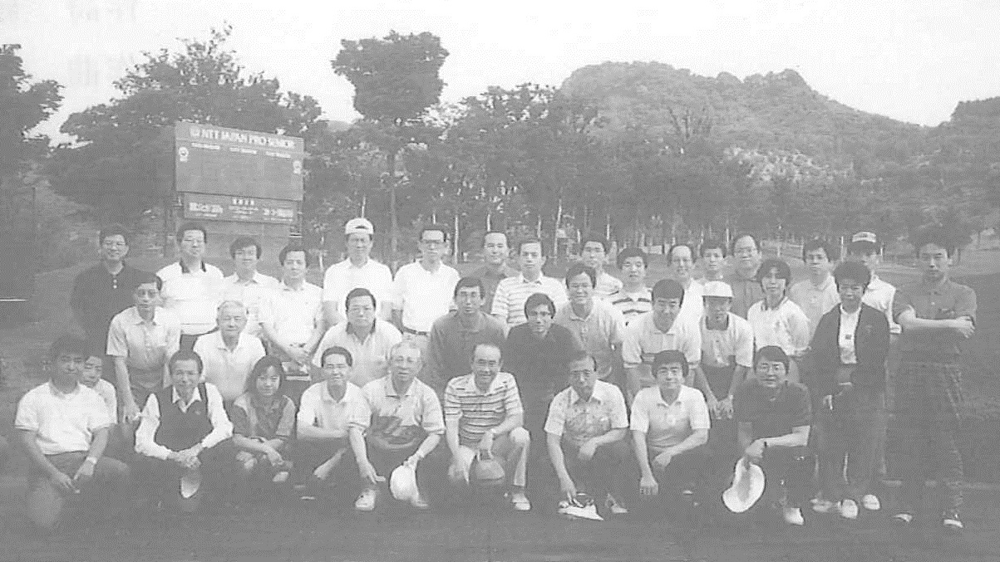

下秋間で先輩後輩が合同の交流
平成6年5月28日(土)、雨あがりの濃い緑に囲まれ東京王翠会ゴルフコンペが、下秋間カントリー倶楽部（安中市）で9組36名の同窓生によって挙行された。ペリア方式で優勝者は佐藤哲男氏（高高27年卒、農林中金）、準優勝は苗字までニイの新居昌子さん（高高53年卒、アソゼーム、腕に覚えありで大阪から参加）であった。
中村文俊先輩（高中50回卒、極東産業）をはじめとする同窓生36名のうち33名は、大型クラブバスで新宿西口を午前6時40分に出発し、往路は、全員がゴルフ歴、家族、趣味などを自己紹介、帰りの車中では、表形式と珍プレー、好プレーを披露しあって、卒業年次を越えて、大叩き、ミスショットを忘れて丸一日の感激と感動を共有しあった。この体験はそれぞれが永く記憶に止まるであろう。
車中の交流は、最高に盛り上り、何処を通ったのか、関越の渋滞も気づかず、校歌を歌う間もなく、アッという間に新宿西口に帰着した。池上、射場、渡邊各氏をはじめ45年卒の皆さんに心からお礼を申しあげる。
東京王翠会の有志によるコンペはこれまでもあったが、当番幹事の呼びかけは今回が初めてである。そのため、今回を第一回として次回につなぎたいとの意見が集中した。
東京王翠会コンペ継続のために、次の諸点を検討材料として提起しておきたい。
１．東京王翠会長杯を浄財を募って作成し、優勝者が保管する。
２．年度幹事を軸に、東京王翠会のゴルフ愛好幹事とノウハウを有する前年度幹事の企画で会員に呼びかける。
３．会場確保のため10組40名を上限とし、申込順に受付け、キャンセル待ちとする。
４．東京玉翠会のゴルフ部門を常設する。
以上4点以外の意見も含め、第2回以降の先輩、後輩合同のゴルフ交流の定着のため、真摯なご検討をお願いする次第である。
（文責 高中58回・高高27年卒 久保醇治）

第1回東京玉翠会ゴルフコンペ（於 下秋間CC H6.5.28)